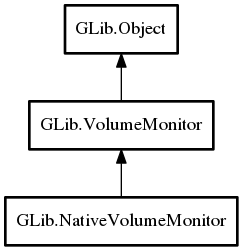

GLib.NativeVolumeMonitor – gio-2.0 Reference Manual
Packages
gio-2.0
GLib
NativeVolumeMonitor
NativeVolumeMonitor
get_mount_for_mount_path
NativeVolumeMonitor
Object Hierarchy:

Description:
public
abstract
class
NativeVolumeMonitor
:
VolumeMonitor
Namespace:
GLib
Package:
gio-2.0
Content:
Creation methods:
protected
NativeVolumeMonitor
()
Methods:
public
abstract
Mount
get_mount_for_mount_path
(
string
mount_path,
Cancellable
? cancellable =
null
)
Inherited Members:
All known members inherited from class GLib.VolumeMonitor
adopt_orphan_mount
@get
get_connected_drives
get_mount_for_uuid
get_mounts
get_volume_for_uuid
get_volumes
is_supported
drive_changed
drive_connected
drive_disconnected
drive_eject_button
drive_stop_button
mount_added
mount_changed
mount_pre_unmount
mount_removed
volume_added
volume_changed
volume_removed
All known members inherited from class GLib.Object
@new
newv
new_valist
get_type
get_class
@ref
unref
ref_sink
weak_ref
weak_unref
add_weak_pointer
remove_weak_pointer
@get
@set
get_property
set_property
get_data
set_data
set_data_full
steal_data
get_qdata
set_qdata
set_qdata_full
steal_qdata
freeze_notify
thaw_notify
dispose
constructed
notify_property
connect
disconnect
add_toggle_ref
remove_toggle_ref
bind_property
notify
ref_count